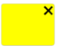
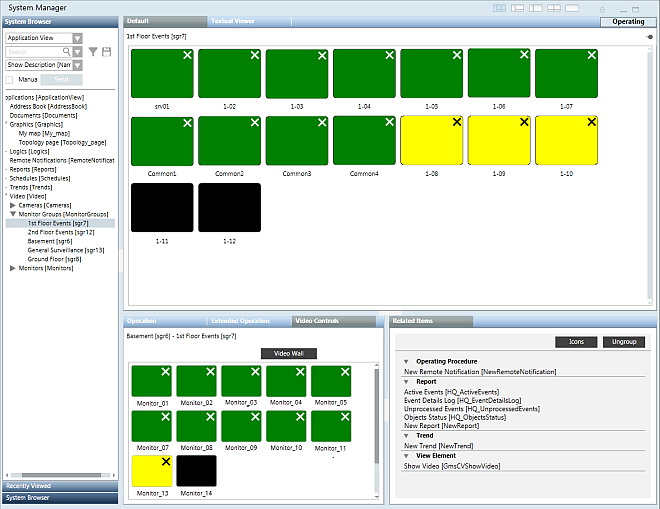

Monitor Control Reference
The video application can provides a graphical representation of a monitor group. Each monitor is represented by a rectangular icon whose color indicates the connectivity status of the associated camera:
- Green: camera properly connected. Camera Status =
Reachable. 
Yellow: connection fault (video signal loss). Camera Status =Fault.- Black: no camera connected.
- Gray: camera is connected but disabled in the VMS. Camera Status =
Disabled.
The icons can contain the following symbols:
- Replay: the monitor is replaying a video recording.
 Sequence: the monitor is playing a sequence.
Sequence: the monitor is playing a sequence.- Close: click this symbol to close the current selection on the monitor


The Contextual pane always displays the monitor control icons associated with your station’s operating monitor group (a different event monitor group is used for event handling).
- To view it, select the Video Controls tab in the Contextual pane and then click Video Wall.
You can also select any monitor or monitor group in System Browser, and its control icons will display in the Monitor Control tab of the Primary pane.
Using these control icons you can:
- Check the status of each of the monitors in a group.
- Connect cameras to single monitors: from System Browser, drag-and-drop the camera onto a monitor icon.
- Connect camera groups and sequences to monitor groups: from System Browser, drag-and-drop the camera group or sequence onto an icon of a monitor group.
- Disconnect cameras from monitors: click the X symbol on the monitor icon.